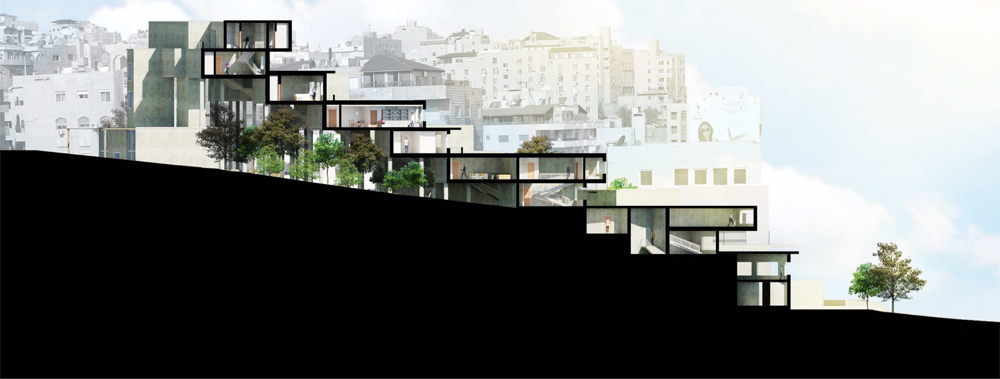

Mixed-use Dwelling
Year | Fall 2014 | 3rd Year BSc.
Type | Residential Mixed-use

The project is on rethinking dwellings as mixed-use buildings in the city of Amman both physically and morphologically based on the principles of modernity, urban living and landscape coordination. My idea was to differentiate between each living unit on the basis of; site’s physical elements, potential users and morphological needs. This project consists of 22 residential units, a commercial complex that hosts a vegetables market, a cafe, a library and a semi-private park.
The cluster geometry order is based on acommpaning to different needs and prefrences of user demands for living conditions and environments as no two units are alike, Thus giving the feeling of freedom of choice.
The project is located in Wadi Saqra St. which is one of the busiest streets in Amman, thus a slight curve and degradation in heights was implemented to deflect the heavy noise and to allow morning light to enter.